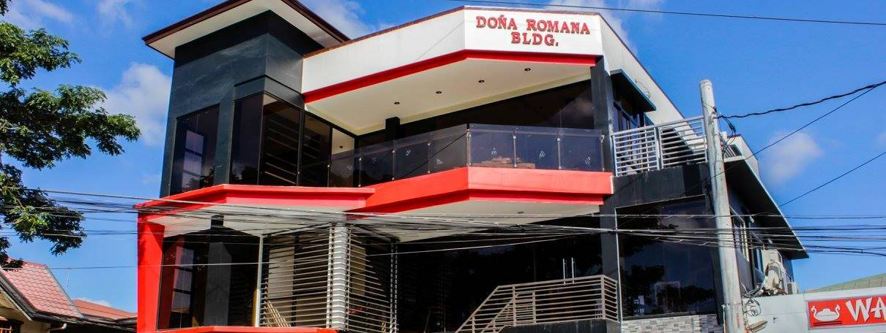

Location:Doña Romana Bldg., Gulod Labac, Batangas City. |
 |
Branches:Gulod Bauan Batangas City |
|
|
Open from 10:00AM to 10:00PM daily. |
|
Contact Info:Call (043) 984 4023 for more details. |
|
Website:Like their page on Facebook |

|

|

|
About:It is one of the best places in Batangas to go for quality noodles. However, the restaurant also specializes in a range of rice meals. The menu offers up simple food and fresh tastes, including delightful deserts. The contemporary decor emphasizes the peaceful ambience within the restaurant. |
Reviews:"Nice place.affordable food and free wifi.. Accomodating crew."
"If you want authentic foods, then this is the best place in the city! You would also love their pancit guisado!"
"i thought wannam is only good at serving pansit. we were surprise by the warmth of the place and the variety of food it now serves."
"Affortable deal,delicious foods Nice crew and management"
"Masarap ang food dito. pwede pang ulitin sa sunod na okasyon"
|
Menu:Secial Chopseuy--------------------------125. Wannam Fried Rice-----------------------150. Sinigang na Hipon-----------------------195. Fried Calamares-------------------------180. Beef Ampalaya.--------------------------175. |
|
Best Seller:Miki Guisado. |